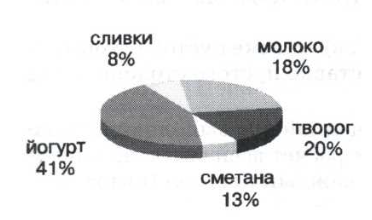
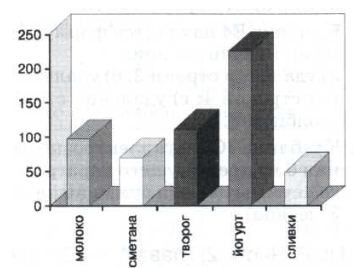
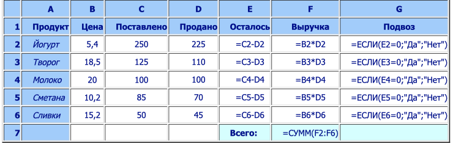
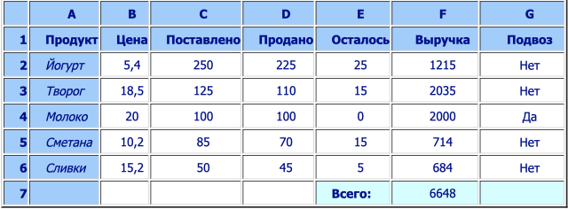

Работа с диапазонами. Относительная адресация
| Главная | Курсы | Статистика | Войти | Регистрация |
Основные темы параграфа:
Графические возможности табличного процесса
Замечательным свойством электронных таблиц является возможность графического представления числовой информации содержащейся в таблице. Для этого существует специальный графический режим работы табличного процессора. Графики придают наглядность числовым зависимостям.
Типы диаграмм
Табличные процессоры дают возможность получать самые различные формы диаграмм и графиков. Ниже на рисунках показаны два типа диаграмм: круговая на рис. 4.1 и столбчатая на рис. 4.2.Исходные данные для этих диаграмм извлекаются из одинаковых диапазонов ячеек А2:А6 и D2:D6 таблиц из предыдущего параграфа. Первый диапазон содержит названия продуктов, второй — количество проданных единиц каждого продукта. Из диаграмм сразу видно, что наибольшим спросом у покупателей пользуется йогурт.
Круговую диаграмму обычно используют в тех случаях, когда нужно показать, какую часть от целого (круга) составляют отдельные величины (секторы). Столбчатая диаграмма (гистограмма) позволяет наглядно сопоставить между собой отдельные величины.
Рис. 4.1. Круговая диаграмма

Рис. 4.2. Столбчатая диаграмма (гистограмма)

Условная функция
Продолжим обсуждение задачи об учете продажи молочных продуктов в торговом павильоне. В случае если тот или иной продукт продан полностью, необходимо организовать его подвоз в торговый павильон. Чтобы отразить это в электронной таблице, добавим в табл. 4.8 новый столбец с названием «Подвоз». В ячейках этого столбца будет высвечиваться слово «Да», если подвоз соответствующего продукта необходим, и «Нет», если продукт подвозить не надо. Разумеется, значения «Да» или «Нет» табличный процессор должен определить сам автоматически.
Для решения задачи воспользуемся условной функцией. Общий вид условной функции следующий:
ЕСЛИ(<условие>; <выражение 1>; <выражение 2>)
<Условие> — это логическое выражение, которое может принимать значение ИСТИНА или ЛОЖЬ. С логическими выражениями вы познакомились в главе о базах данных. В электронных таблицах они имеют тот же смысл. <Выражение 1> и <выражение 2> могут быть числами, формулами или текстами.
Условная функция, записанная в ячейку таблицы, выполняется так: если <условие> истинно, то значение данной ячейки определяет <выражение 1>, в противном случае — <выражение 2>.
В нашем случае условие означает проверку на равенство нулю количества оставшегося продукта. В качестве выражений 1 и 2 выступают текстовые константы «Да» и «Нет».
После внесенных изменений учетный документ примет вид, представленный в табл. 4.8 (в режиме отображения формул) и в табл. 4.9 (в режиме отображения значений).
Таблица 4.8. Таблица с условной функцией в режиме отображения формул

Таблица 4.9. Таблица с условной функцией в режиме отображения значений

Вопросы и задания
1. Как в электронной таблице реализуются логические операции при записи условных функций?
2. Что такое абсолютный адрес?